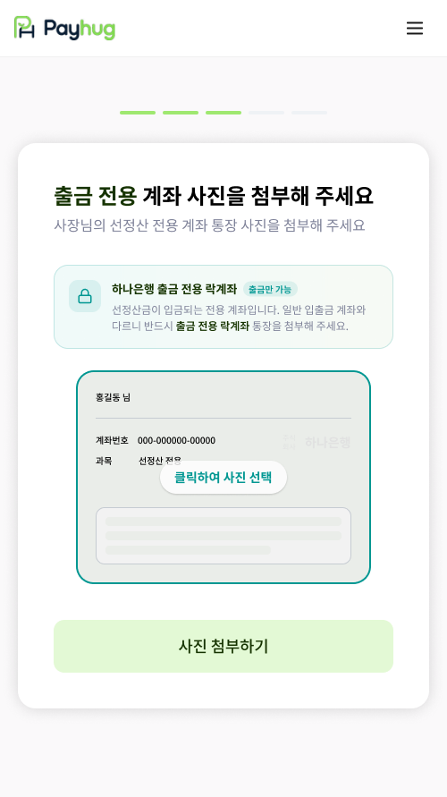

PART 2 · 가입에서 선정산 개시까지
15
락계좌 통장 첨부 —
출금전용 통장
이어야 합니다
계좌를 두 개 만든 직후라, 여기서 통장 사진이 섞이는 일이 자주 생깁니다

1
방금 만든 출금전용 계좌의 통장 사진입니다
화면 위 파란 박스에 「하나은행 출금 전용 락계좌」, 그 옆에 「출금만 가능」이라고 적혀 있습니다. 사진을 고르기 전에 그 계좌가 맞는지 계좌번호를 한 번 읽어드리고 확인받으세요.
2
일반 입출금 통장을 올리면 넘어가지 않습니다
같은 날 은행에서 두 개를 한꺼번에 만드시다 보니, 사장님도 어느 게 어느 통장인지 헷갈리십니다. 화면 안내에도
「일반 입출금 계좌와 다르니 반드시 출금 전용 락계좌 통장을 첨부해 주세요」
라고 적혀 있습니다.
3
통장 사진은 하나은행 앱에서 바로 뽑습니다
실물 통장이 없어도 됩니다. 하나은행 앱에서 계좌설정 > 통장사본확인으로 들어가 이미지로 저장하신 다음, 그 사진을 여기에 올리시면 됩니다.
여기 올리는 건 사장님이 돈을 받으실 통장이 아닙니다. 선정산금이 들어오는 출금전용 통장입니다.
가맹점 앱 · 계약 STEP6-1 락계좌 통장 첨부 화면
pay
hug